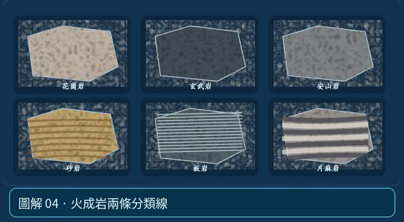

第 03 單元｜圖解 4/6｜課本 p.71–75
火成岩兩條分類線
冷卻環境決定晶體粗細；岩漿成分影響顏色與礦物組成。花崗岩與玄武岩不同，不只差在冷卻速度。
① 看一眼② 操作圖③ 自己推理④ 揭開解答
🔬 這張圖，請自己動手試
操作圖上方的頁籤、滑桿或按鈕；圖片也能左右滑動放大觀看。
互動圖解 · 火成岩兩條分類線

原創 SVG 地科教學模型，方便理解，非真實比例、非即時地震資料；互動無法載入時仍有靜態圖。
STEP 01 · 先觀察
👀 眼睛先找線索
在標本模擬中選粗粒火成岩與細粒火成岩，問自己：晶體大小和岩石顏色是哪兩種線索？
💡 為什麼是這樣？
晶體粗細主要與冷卻條件有關；顏色受礦物組成影響，兩條分類線要分開看，不能用白色直接判斷深成。
🎯 換個問法想一題
「顏色淺」能直接確定某岩石是在地下慢冷形成的嗎？
我想好了，點開看答案 ↓
不能。顏色偏向成分線索，晶粒大小才較接近冷卻條件線索。
⚡ 一句記住：深成不等於深色